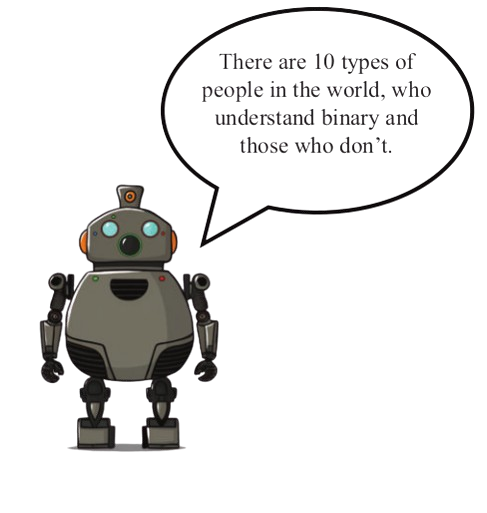
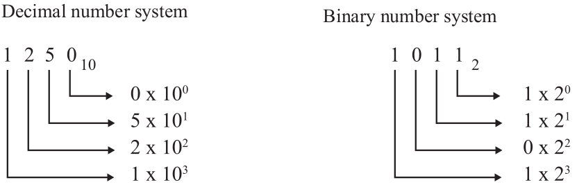
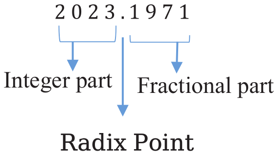
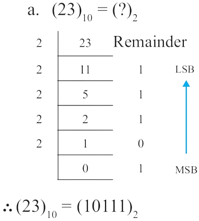
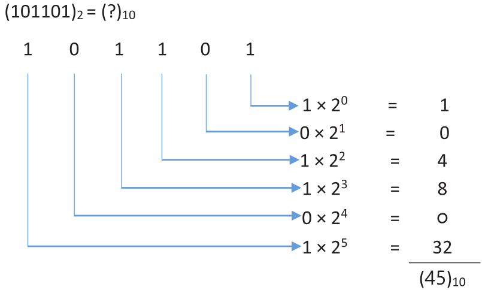
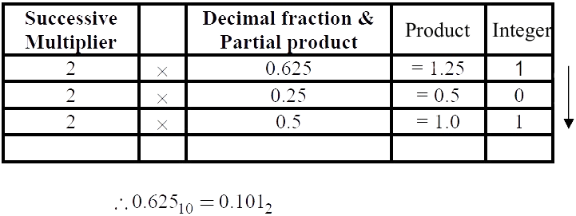
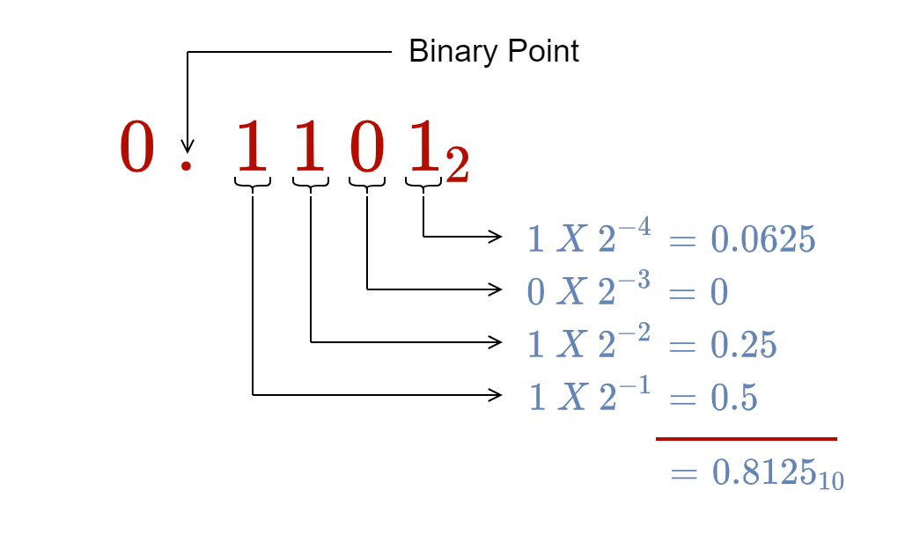
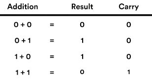
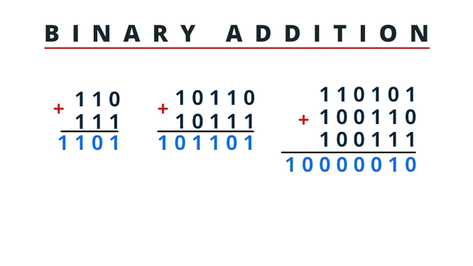
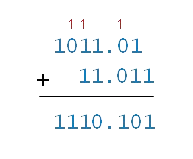

Mathematics (VIII)
Invalid Date
Binary Numbers
Chapter Info
Total Session: 10
- Concept of Binary Numbers
- Characteristics of Binary Numbers
- Conversion
- Binary Addition
- Complement
- Subtraction
- Multiplication
Session 01 (Concept)

History of Binary
- Wilhelm Leibniz
- Explanation of the Binary Arithmetic (1703)
- Decimal to Binary

- George Boole
- The Mathematical Analysis of Logic (1847)
- Real Life with 0 & 1 (Truth & False)
Quiz
10 Minutes
Groups of 4
What is the full form of Bit?
Why does the binary system use two digits only? Explain.
Express the binary number 1011 in decimal form.
What will be the number if we express 11 from Binary to Decimal?
Think
What is the use of Binary Numbers?
Session 02 (Characteristics)
Recap
What is the use of Binary Numbers?
Number Base
- Decimal: \((134)_{10}\)
- Binary: \((1101)_2\)
Number Using 01
| Decimal | 0 | 1 | 2 | 3 | 4 | 5 | 6 | 7 |
|---|---|---|---|---|---|---|---|---|
| Decimal | 1 | 1 | 10 |
Place Value

- Write place value of each digit of the Binary number \((11011)_2\)
Radix

Significant Digit
- Decimal: \((134)_{10}\)
- Binary: \((1101)_2\)
MSB and LSB
Digital machine
Can Detect 0 and 1
- Digital Clock
- Digital Scale
Group Work
2 Groups
Question and Answers
Example
- What is Base?
- Find place value of 15644 & 1111
- Integer, Radix, and Fraction: 154.876
- Full Meaning of Bit
- LSB, MSB: 198, 1011
Session 03 (Conversion)

Fraction
Convert 23.25 to binary
Integer: Divide \(\rightarrow\) \(MSB \to LSB\)
Fraction: Multiply \(\to LSB \to MSB\)
| Multiplication | Integer | Decimal |
|---|---|---|
| 0.8125 x 2 | 1 | 0.625 |
| 0.625 x 2 | 1 | 0.250 |
| 0.250 x 2 | 0 | 0.50 |
| 0.50 x 2 | 1 | - |
D-B Alternative
14 \(\to\)
Binary to Decimal

B-D Alternative
| 1 | 2 | 4 | 8 | 16 | 32 | 64 |
|---|---|---|---|---|---|---|
| 0 | 1 | 0 | 1 | 0 | 1 | 0 |
What number do we have?
Make Number
Make a binary number of your choice
Individual task
| 1 | 2 | 4 | 8 | 16 | 32 | 64 |
|---|---|---|---|---|---|---|
| - | - | - | - | - | - | - |
Decimal to Binary (Fraction)
Keep multiplying fractional part by 2 until the product is 1.0

Binary to Decimal (Fraction)

Conversion Tasks
- \((976)_{10}\)
- Your CADET NO.
Session 04 (Addition)
Addition Rules

Additon Example

Additon of Fraction


www.statmania.info | Abdullah Al Mahmud | Press space or arrow to change slides